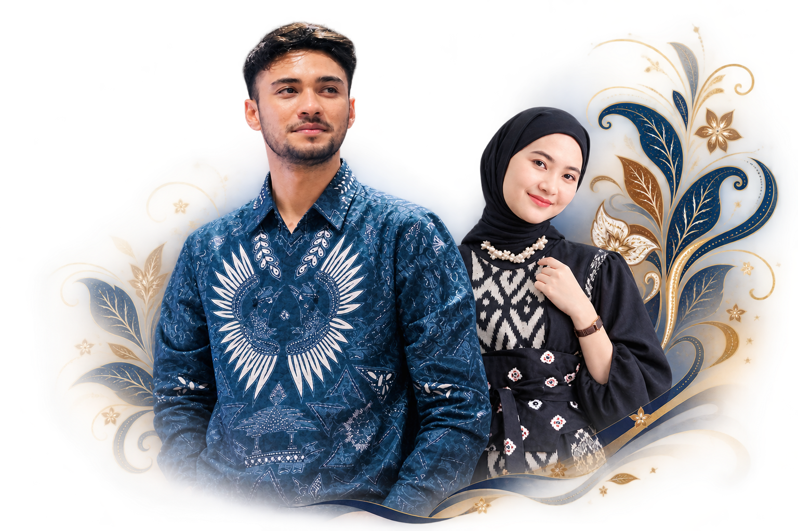
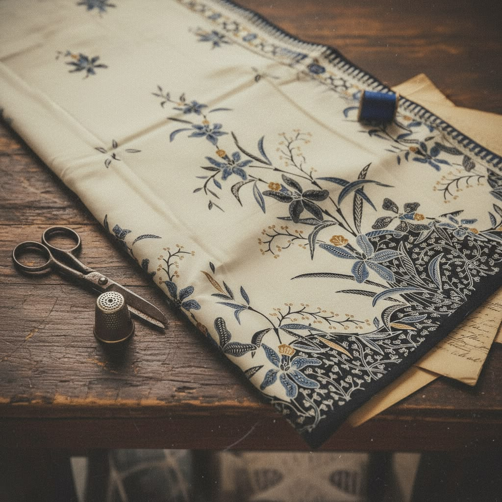
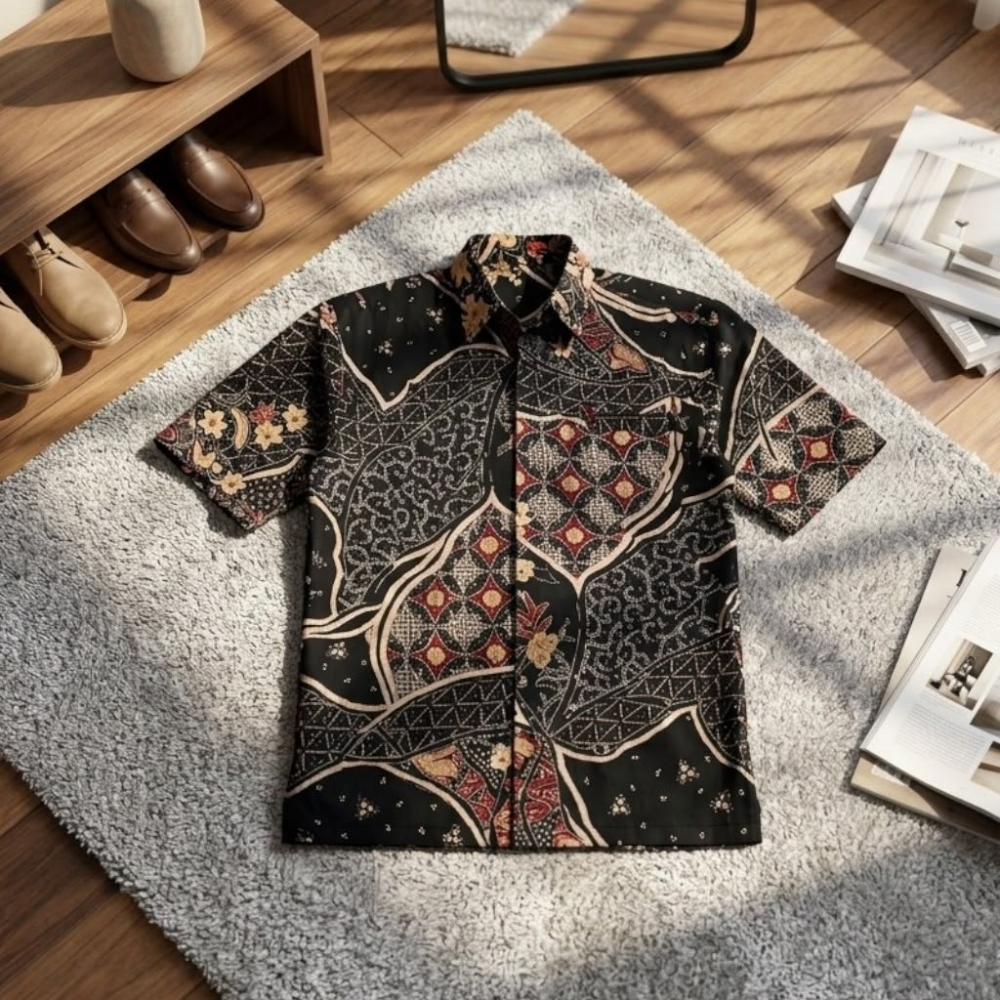
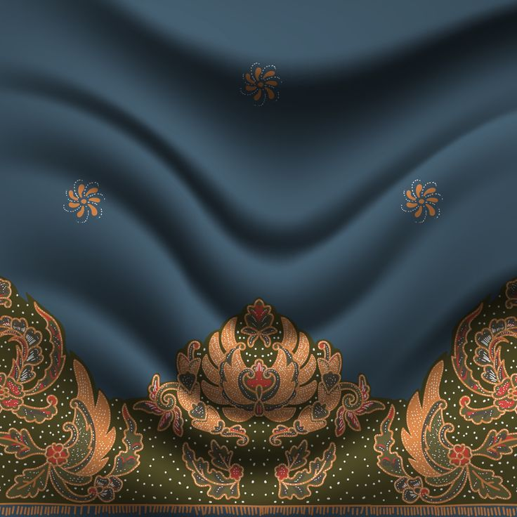
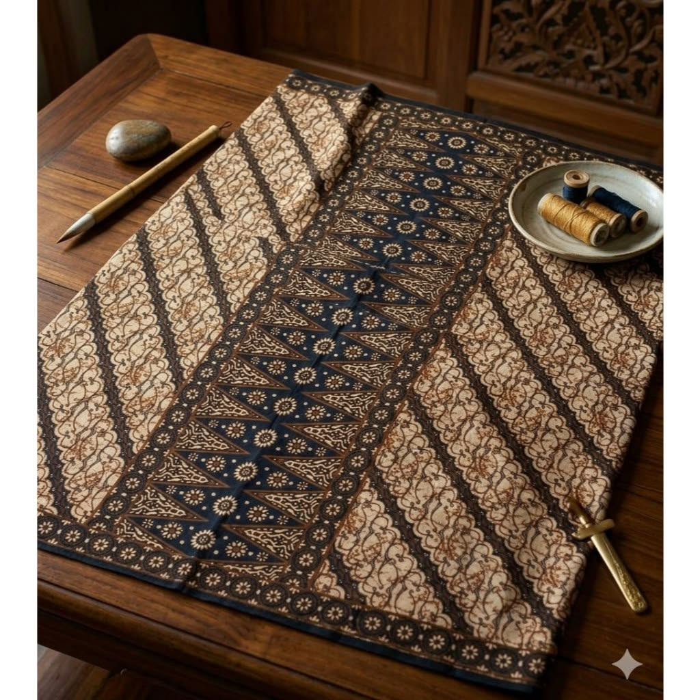
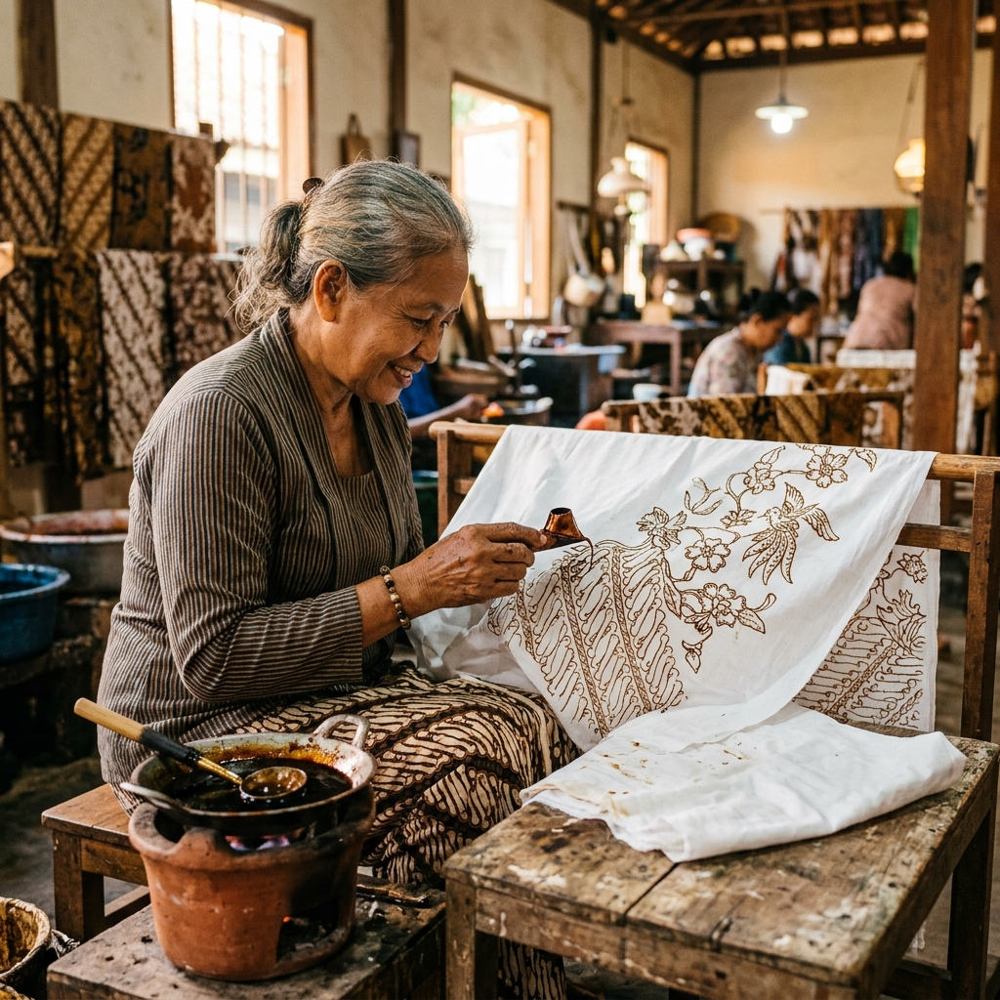
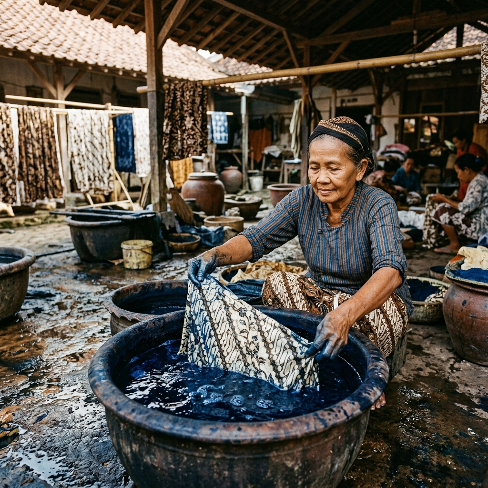
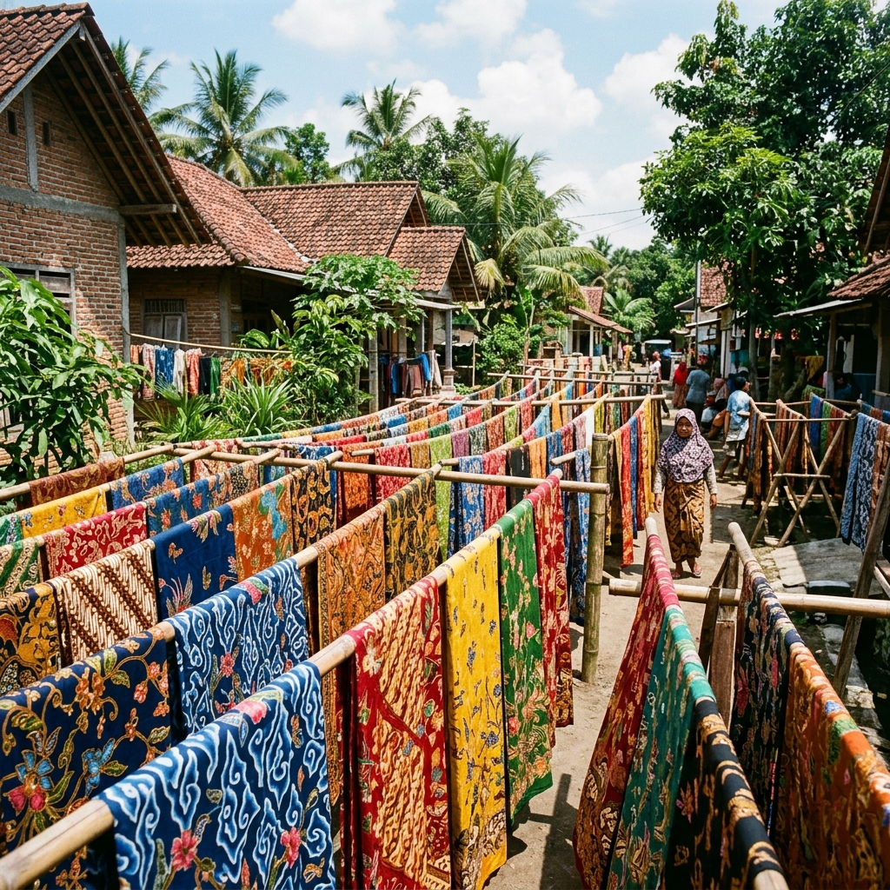
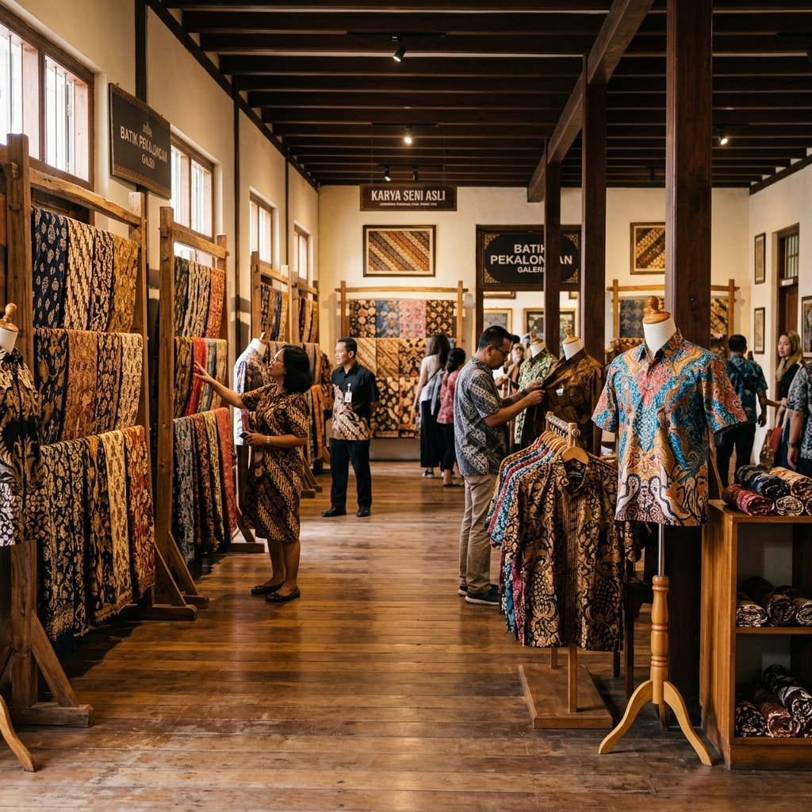

Untuk Pembeli & Pecinta Batik: Jelajah & apresiasi karya batik autentik langsung dari pengrajin Pekalongan.
Untuk Pemilik UMKM: Patungan bahan baku grosir murah & kelola bisnis dengan insight cerdas.

Ekspor Batik Q2 2025
Tenaga Kerja Batik
Kota Kreatif SE Asia
Mengenal BatikNusa
Pekalongan dikenal dunia sebagai "Kota Batik" dan telah diakui UNESCO sebagai bagian dari Creative Cities Network sejak 2014 — satu-satunya kota di Asia Tenggara yang meraih status kehormatan ini.
Di balik kain-kain indah bermotif Jlamprang, Sekar Jagad, dan Terang Bulan, terdapat ribuan pelaku UMKM yang menggantungkan hidup dari sehelai canting dan setetes malam.
BatikNusa hadir sebagai pemberdaya digital untuk memperluas jangkauan etalase karya pengrajin, memfasilitasi belanja bahan baku kolektif, serta menyajikan analitik bisnis terpadu.
Masalah yang Kami Jawab
Kami memahami kesulitan yang dihadapi pengrajin lokal. BatikNusa hadir dengan solusi nyata terintegrasi.
Mayoritas UMKM batik masih mengandalkan grup WhatsApp dan mulut ke mulut, membuat jangkauan pasar terbatas hanya di sekitar wilayah produksi.
Pembelian mori, malam, dan pewarna secara sendiri-sendiri dalam volume kecil membuat UMKM sulit mendapatkan harga terbaik dan rentan terhadap naik-turunnya harga pasar.
Tanpa pencatatan yang rapi, UMKM sering kehabisan stok saat musim ramai (Lebaran, wisuda) atau kelebihan stok saat sepi pembeli.
FITUR PLATFORM
Semua yang Anda butuhkan untuk mengelola dan mengembangkan usaha batik Anda.
Pamerkan produk batik Anda ke pembeli dari seluruh Indonesia bahkan mancanegara, lengkap dengan cerita filosofi motif yang memperkuat nilai jual.
Gabung dengan UMKM lain untuk membeli bahan baku dalam jumlah besar dan dapatkan harga grosir hingga 30% lebih murah dari pasaran.
Catat penjualan dan stok dengan mudah, dapatkan rekomendasi otomatis kapan waktu terbaik untuk restock atau promosi berdasarkan data.
Koleksi Pilihan
Karya kain batik tulis canting & batik cap pilihan langsung dari workshop pengrajin terverifikasi.




Cara Bergabung
Proses pendaftaran cepat dan mudah didampingi oleh tim BatikNusa.
Hubungi tim kami via WhatsApp atau form konsultasi untuk pendataan profil UMKM Anda.
Unggah foto dan cerita keunikan motif batik Anda ke etalase katalog digital terpadu.
Ikut patungan bahan baku grosir bersama UMKM lain di Pekalongan untuk pangkas biaya.
Lihat rekomendasi analisis tren pasar otomatis untuk tingkatkan keuntungan bisnis Anda.
Galeri Kegiatan & Pengrajin
Potret nyata proses pembuatan batik, workshop pengrajin lokal, dan aktivitas pemberdayaan UMKM Pekalongan.

Wiradesa, Pekalongan

Buaran, Pekalongan

Kedungwuni, Pekalongan

Showroom Batik Pekalongan
Cerita Sukses
Sejak gabung group buying, biaya beli kain mori turun lumayan banyak. Sekarang modal hemat itu bisa dialokasikan buat produksi motif tulis baru.
Dulu jualan cuma lewat grup WhatsApp tetangga. Sekarang produk saya bisa dipajang di etalase digital dan dilihat pembeli dari luar kota.
Fitur pencatatan stok dan rekomendasi permintaannya membantu banget, jadi nggak lagi kehabisan bahan pas musim wisuda dan lebaran ramai.
Layanan & Informasi
BatikNusa hadir untuk mendampingi pendaftaran UMKM, informasi group buying bahan baku, dan konsultasi bisnis pengrajin Pekalongan.
Buaran & Wiradesa, Pekalongan